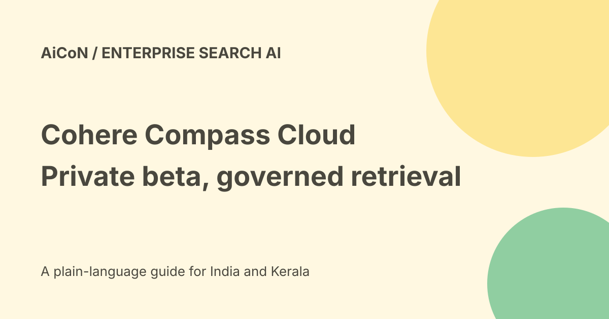

Cohere Compass Cloud: private beta, retrieval and permissions
Cohere announced Compass Cloud on 25 September 2026 as a managed private beta. It handles retrieval infrastructure and model inference for enterprise search and AI applications. The current product page still describes private-beta participation, not unrestricted public access or a free unlimited search API.

What retrieval does
Retrieval finds material an application can use to answer a question. Retrieval-augmented generation, or RAG, gives a model relevant source context before it writes an answer.
A retrieved passage can still be stale, incomplete or wrong. Good search is necessary for many enterprise answers, but it is not proof that the generated conclusion is correct.
The managed pipeline
Cohere describes connectors, document parsing, dense and sparse representations, indexing, hybrid search, reranking and access controls.
Dense search looks for meaning; keyword or sparse approaches can preserve exact terms. Reranking chooses stronger results from an initial set. These methods can work together rather than every query using only one.
Ways to integrate
The launch names APIs, a dedicated MCP server and a Python SDK. The product page also describes managed and hybrid deployment options.
API access is a developer integration, not a ready-made consumer app. Check the actual beta documentation, authentication, limits and supported operations before implementation.
Cloud and self-hosted are different
The announcement says Cohere manages the cloud pipeline and inference, while self-hosted deployments remain available for privacy-constrained projects.
Do not assume a cloud beta automatically meets a requirement for an isolated or on-premises system. Confirm where content, embeddings, logs and inference are processed.
Permissions during retrieval
Cohere says document-level and multi-tenant permissions are enforced during retrieval rather than left to the application to filter later.
Validate this against the source system's current permissions. A stale access grant, incorrectly mapped user or shared index can still create risk. Test denied-access cases, not just successful search.
Deletion and retention
The announcement says retention policies expire content and prevent deleted documents from being resynced. It also describes keeping source files, parsed content and embeddings as separate records.
Ask how deletion propagates across those records, caches, backups and logs. A policy description is not evidence that a particular file has already been removed.
Agents issue more than one query
Cohere highlights workflows where an agent reformulates questions and crosses several sources. Latency, cost and relevance can accumulate across that sequence.
Apply access rules at every step. A useful first result does not authorise unrelated retrieval or disclosure from another data source.
A careful beta evaluation
- Confirm accepted beta access and current terms.
- Use approved non-sensitive sample documents.
- Define questions and relevant source answers.
- Test exact terms, semantic matches and no-match cases.
- Test multilingual and complex-document examples.
- Test users who must not see particular files.
- Change and revoke source permissions, then recheck.
- Delete a sample and inspect propagation.
- Measure quality, latency and end-to-end cost.
No beta request, connector, upload or search application was created here.
Benchmark boundaries
Cohere reports a retrieval improvement on High Finance, its own annotated investment-banking benchmark. The launch explains that comparison pipelines used different parsing or embedding setups.
This is a vendor benchmark, not an independent result for every corpus. It does not guarantee correct financial advice, better Malayalam retrieval or a fixed cost saving in your application.
Pricing and India
No public final Compass Cloud tariff, free allowance or INR quote was established. Private-beta participation may involve terms not shown in a marketing page.
No Indian tenant, processing region or local compliance approval was verified. Ask about ingestion, storage, queries, inference, support and export before budgeting.
Source restrictions still apply
A document may be readable by an application but not approved for onward publication. Preserve its audience, date and owner restrictions in the answer.
Treat instructions inside retrieved documents as content, not permission to send data, change tools or reveal unrelated records.
What changed since the original post?
We keep private-beta and self-hosted boundaries, explain retrieval versus answer accuracy, and add permission, deletion and multi-query evaluation checks. Token savings remain a workload-dependent claim.
Frequently asked questions
Is Compass Cloud generally open?
The checked pages describe private beta.
Does retrieval guarantee a correct answer?
No.
Was private data searched?
No.
Sources: Official Cloud beta announcement · Current official Compass product. Checked 7 October 2026.